圖面
- How to creat a drawing ?
如何建立一張圖面 ?
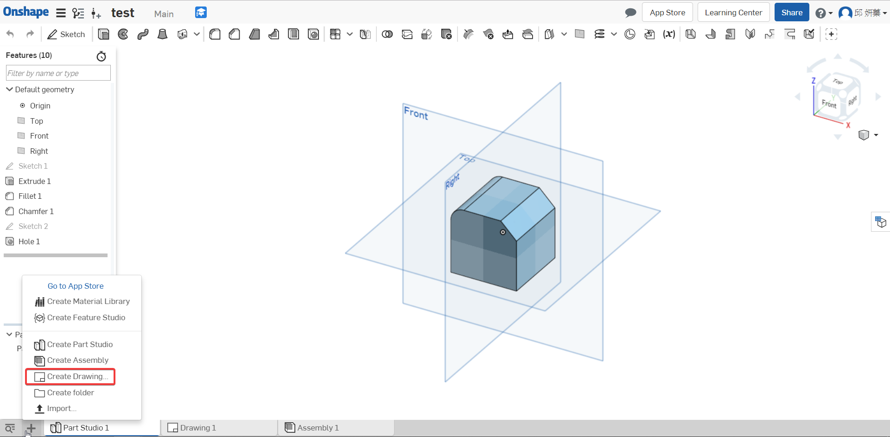
- Choose a drawing
選擇一張圖面
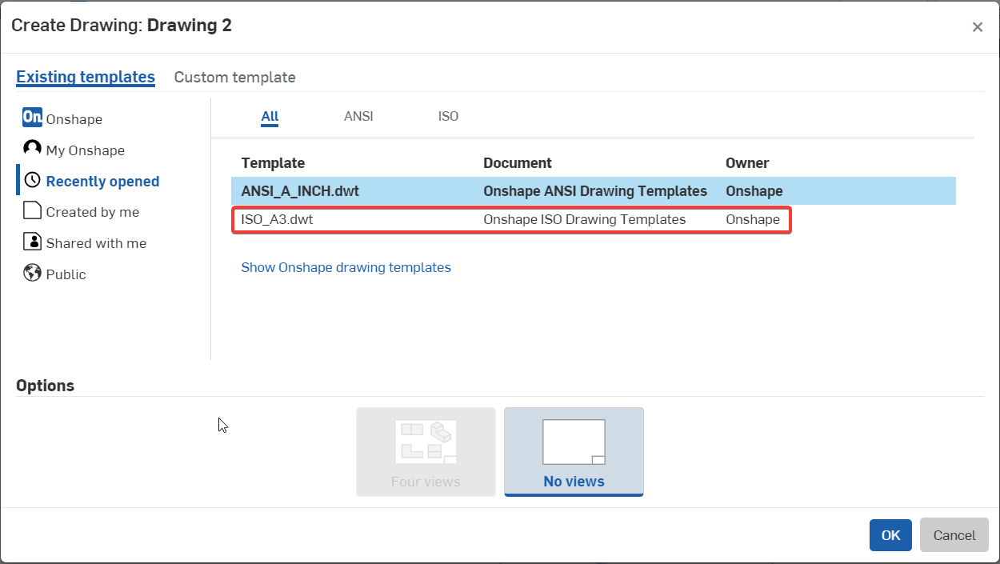
- Choose the part to the drawing (Insert View)
選擇零件到圖面
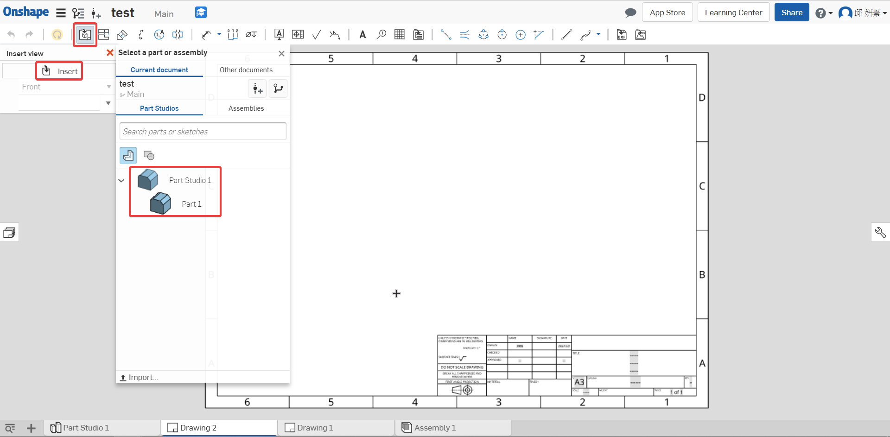
- Set up the drawing
設定圖面
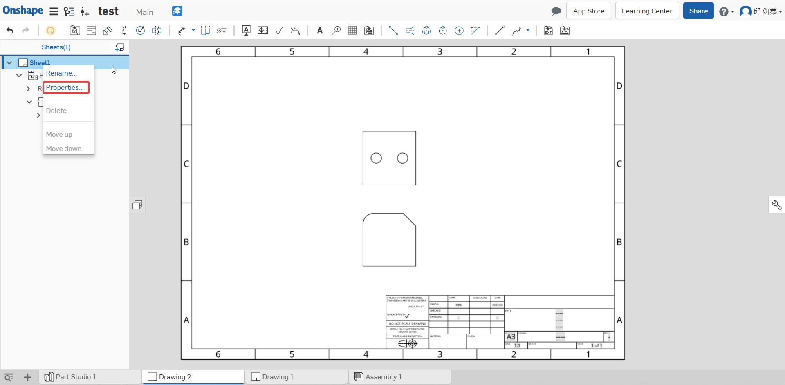
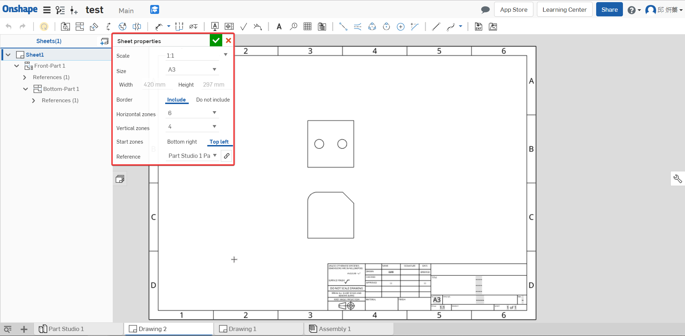
Scale 比例
Size 圖紙規格
Border 邊界
- Project view (p) 投影
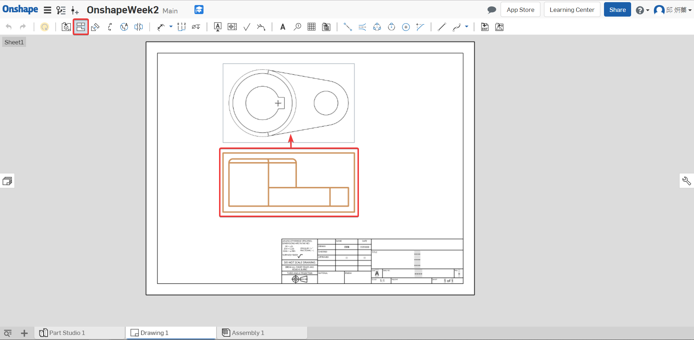
- Auxiliary Wiew 輔助視圖
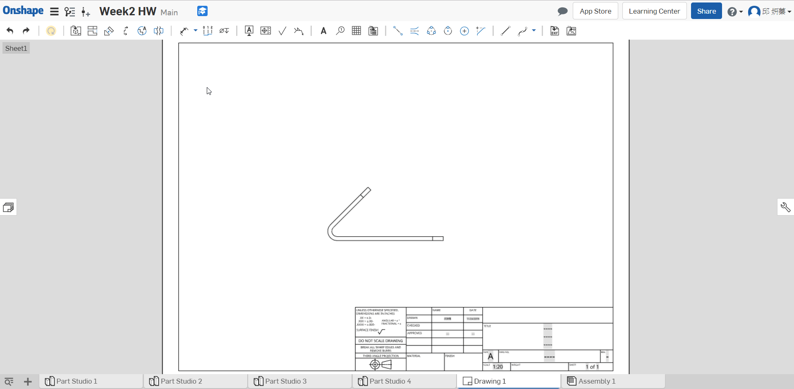
- Section view 剖視圖
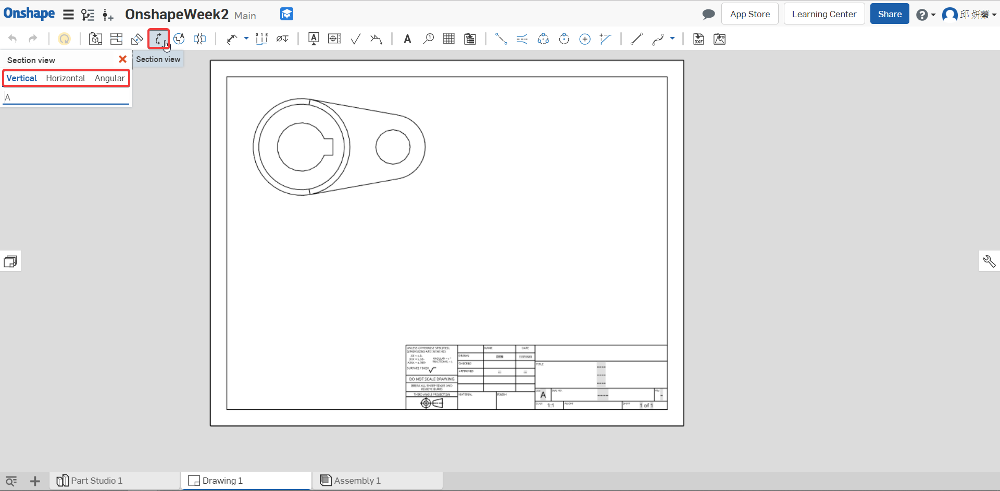
Vertical 垂直
Horizontal 水平
Angular 角度
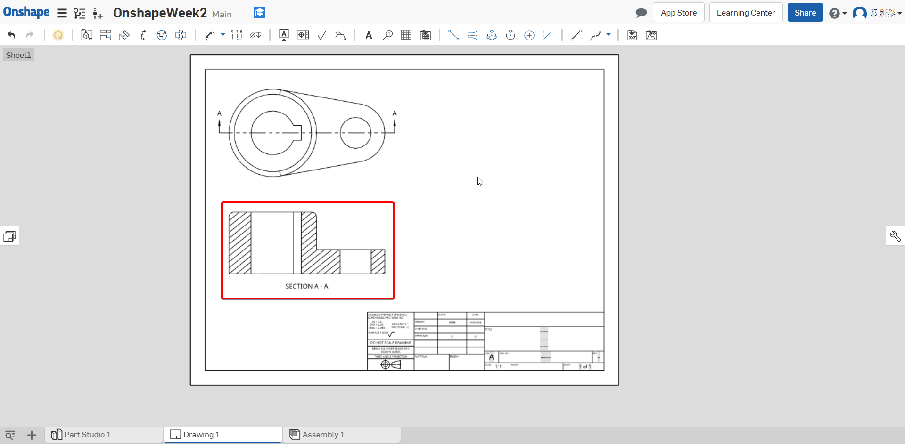
- Detail view 局部放大視圖
If dimension is too crowded or important , you can use it.
如果標註太擠或想表示重要標註就可使用此功能
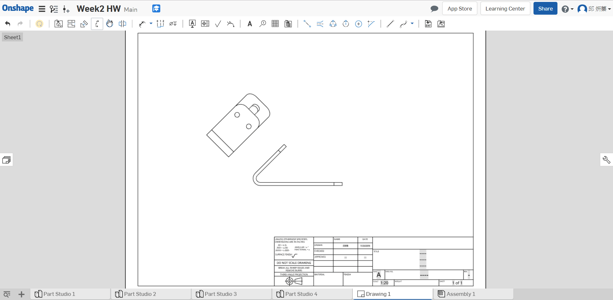
- Break view 中斷視圖
If the part too long , you can use it.
如果零件太長就可使用此功能
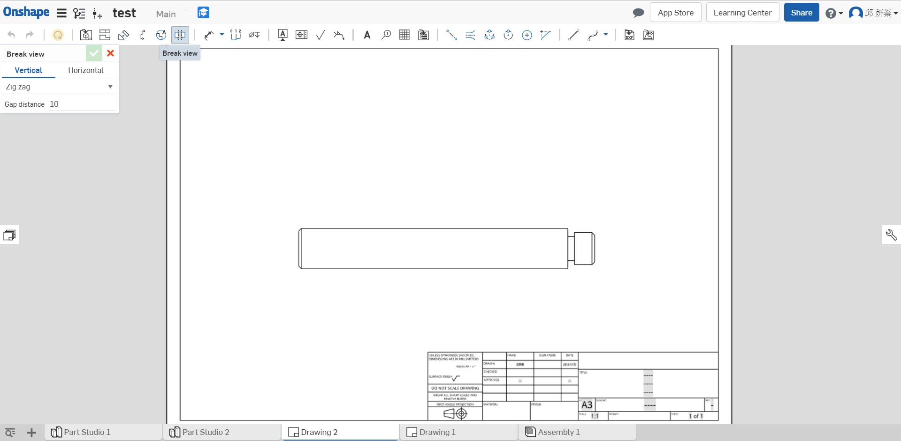
- Datum 基準
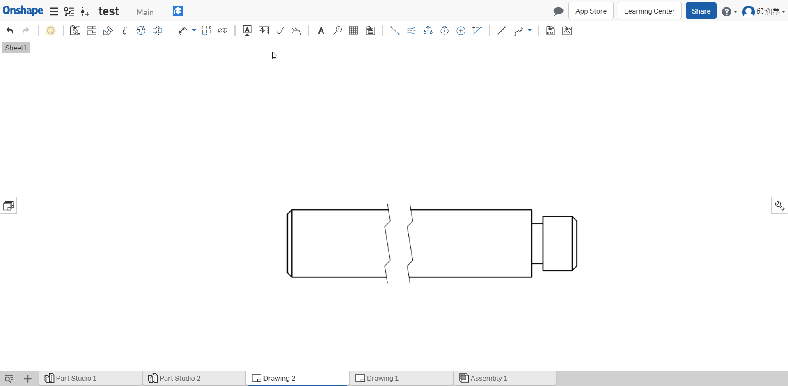
- Geometric tolerance 幾何公差
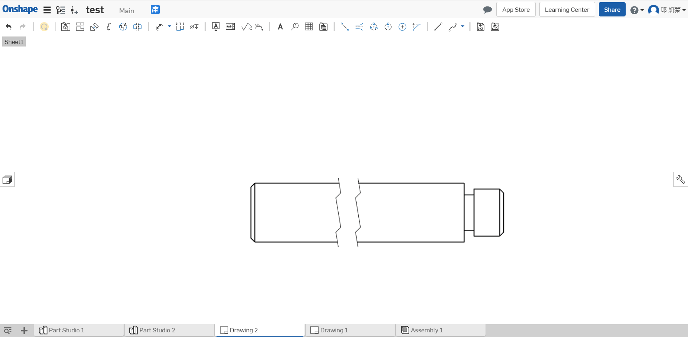
- Surface finish symbol 表面織構
- Callout 件號
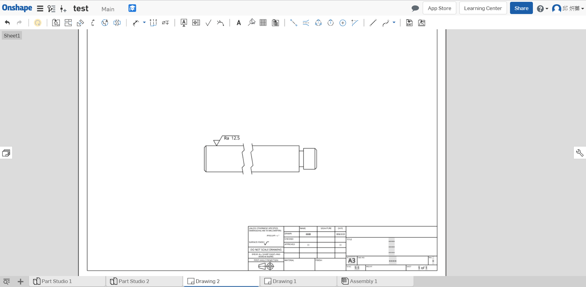
- Table 零件表
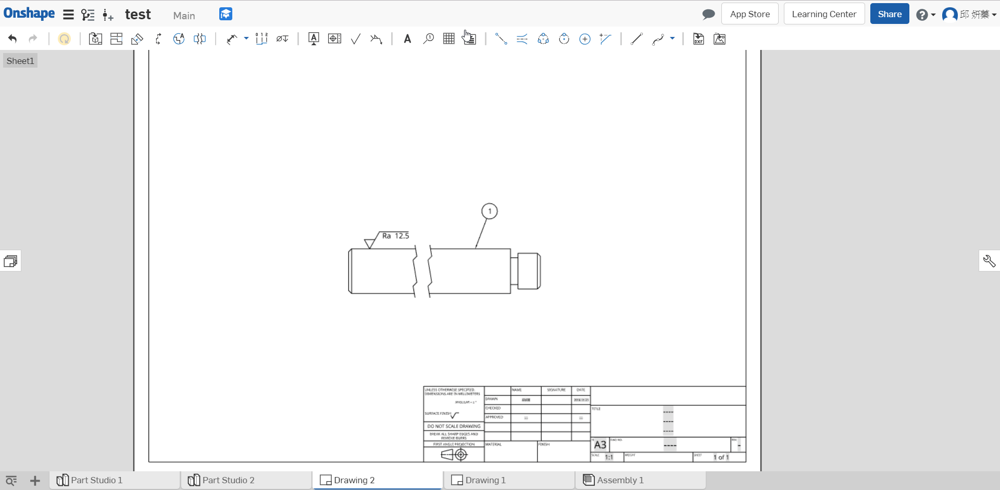
- 2 point centerline 2點中心線
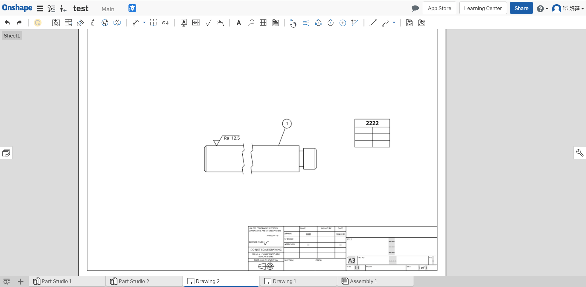
- Edge to edge centerline 中心線

特徵 << Previous Next >> 組合